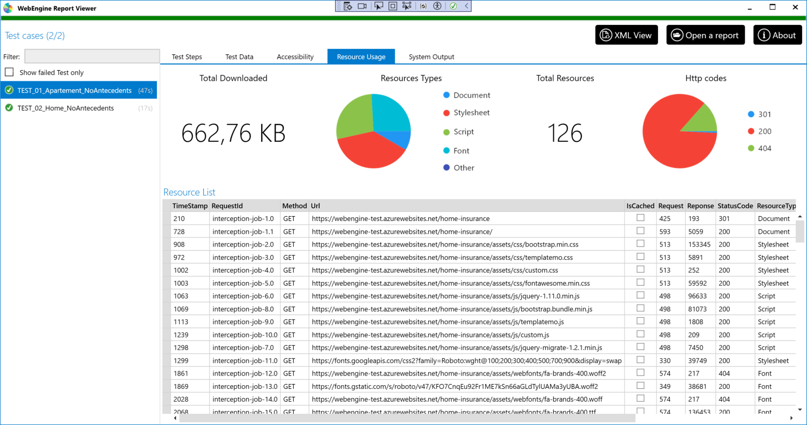

Measure environmental impact during the user journey
With the WebEngine Framework, you can easily trace resource usage and network communication between your web application and the web server. This feature is useful for measuring the environmental impact of your application and its evolution over time.
Under the hood, the WebEngine Framework uses the Selenium Bi-Directional functionality to intercept information about network communication and resource usage. However, when using the WebEngine Framework, you don't need to worry about the technical details; you just need to enable the feature and use the provided API to get the information you need.
How to activate resource usage tracing?
Using Gherkin approach
Using Gherkin, you need to activate Traffic Monitoring BEFORE the first action on the target aWpplication and stop monitoring after the last action.
Note
Web pages may take time to load HTML documents and resources (such as images and scripts) requested by HTML and XHR. Please wait until all user interactions are finished before stopping the traffic monitoring, or the monitoring report may contain missing items.
To start monitoring, you'll need to run the following code
var usageReport = BrowserFactory.StartMonitoring(driver);
After all user interactions, use following code to stop monitoring
usageReport.StopMonitoring();
Attach usage monitoring result to Test Report
Assuming you have an instance of TestCaseReport named tcReport, the following code will attach it to test report.
tcReport.Attach(usageReport, "ResourceUsage");
Using keyword driven approach
Resource usage tracing is enabled at the test case level. The flag is defined at MeasureResourceUsage. When the flag is enabled before test execution, the framework will start a network interceptor and save information of all incoming and outgoing traffic in the report.
To enable the feature, there are two ways:
- Set the property
MeasureResourceUsageof TestCaseWeb to true in your code.
public class MyTestCase : TestCaseWeb
{
public MyTestCase() {
// Define Test steps
TestSteps = new TestStep[] {
new TestStep{ Action = nameof(Login)},
new TestStep{ Action = nameof(SearchProspect)},
new TestStep{ Action = nameof(Underwriting)},
};
// ** Activate resource usage tracing **
MeasureResourceUsage = true;
}
}
- Provide a test parameter named
ResourceUsageand set it to True in your test data. For example, you can provide the parameter via Excel test data on the test cases you want to activate.
How are the results displayed?
When resource usage tracing is enabled, the framework will save the related raw data in the report. The report will be analyzed and visualized in the Report Viewer:

The report will show the following information:
- On the top-left, the size of responses (in bytes) categorized by type: Font, script, CSS, and the HTML document itself.
- On the top-right, the number of responses categorized by HTTP code: 200, 404, 500, etc., making it easy to eliminate dead links (404) in your application.
- At the bottom, the detailed list of every HTTP request initiated by the browser or XHR, providing more details to help you optimize.